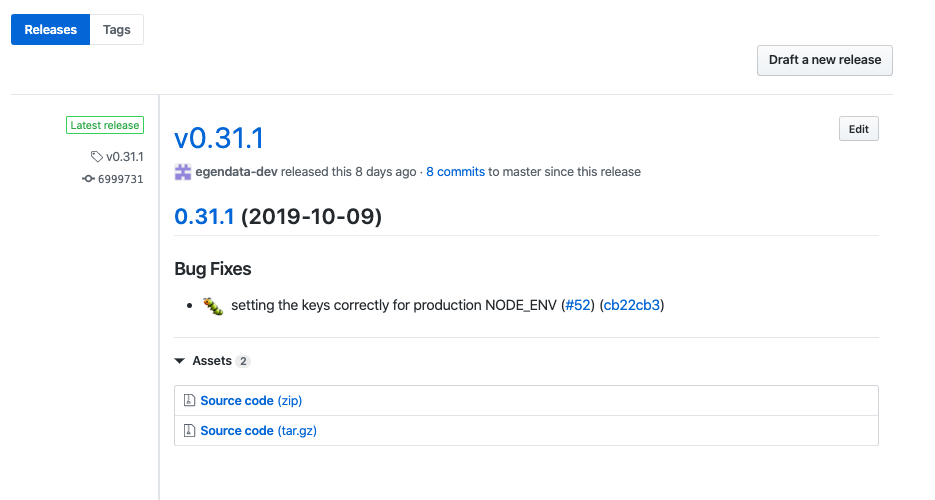

client
This guide should help you setup from scratch or understand how the CI for client is configured
Automating things with Travis and semantic-release
This project is meant to be used as an NPM package, as so we automate the process of publishing to NPM
We use Travis CI to build, test and deploy. It is free as long as the project you build is open source
The way Travis CI works is that everytime your repository is updated (new branch, new commit, new tag) it picks up that branch and will run the specified tasks from your configuration
We use semantic-release for automating the package release workflow based on the commit messages
The Travis configuration is rather simple and consists of 2 stages (
lint-and-testandpublish)lint-and-teststage runs for every branch (exceptmaster) and it will install npm dependencies, run lint and unit tests; This is a good tool that assists you when you review a pull-request as you can see that tests are failing or passingpublishstage runs only on themasterbranch and it runssemantic-release
We also set several environment variable inside Travis:
GITHUB_TOKENis used for push back to Github a new release, update CHANGELOG (it needs to have write access to the repository)NPM_TOKENis used for publishing to NPM
For
semantic-releasewe have the following dev dependencies (plugins) installed at the time of writing this (semantic-releasecomes with a set of plugins included and some we install and explain further down):"@semantic-release/changelog": "^3.0.4", "@semantic-release/git": "^7.0.16", "semantic-release": "^15.13.24",We mostly use semantic-release plugins with the default configuration and the pipeline for it looks as follows as defined in the .releaserc.json
{ "plugins": [ "@semantic-release/commit-analyzer", "@semantic-release/release-notes-generator", "@semantic-release/changelog", "@semantic-release/npm", "@semantic-release/github", "@semantic-release/git" ] }Now let’s dive deeper into each plugin and what and why we do things in this way:
@semantic-release/commit-analyzeris the one that analyzes commits since the last release and determines if a new and what type of release should be made; It is going to retrieve the latest Git tag from the Github repo and go through the commits made since that tag and determine if a new release should be made (that is iffix:orfeat:commits are present)!!! IMPORTANT NOTICE: If you add
semantic-releaseto a new project and don’t want your first release to bump directly to 1.0.0 you should manually create a git tag likegit tag v0.0.0in case you have initialized your repo version with 0.0.0 in thepackage.jsonand push the tag to remote before runningsemantic-release. This will make so that it determines the next version based on 0.0.0 !!!@semantic-release/release-notes-generatoris the one that makes the release notes look nice like this:

@semantic-release/changelogis the module that creates and updates the CHANGELOG@semantic-release/npmis used to publish to NPM.!!! IMPORTANT NOTICE: If you are setting this up for a new project that should be scoped to @egendata you need this following part inside your
package.jsonto be able to create the package !!!"publishConfig": { "access": "public" },@semantic-release/githubis the one that pushes the new tag and release notes back to Github and needs theGITHUB_TOKENenvironment variable set in Travis@semantic-release/gitis an extra plugin that we added because we want to commit and push back to Github the updatedCHANGELOG.mdandpackage.json. Without this module thepackage.jsonis never pushed back to Github, this isn’t a problem sincesemantic-releasedetermines the next version based on existing Git tags but it’s nice to have it updated. It uses the default configuration and commits withchore:which will not trigger a new release.